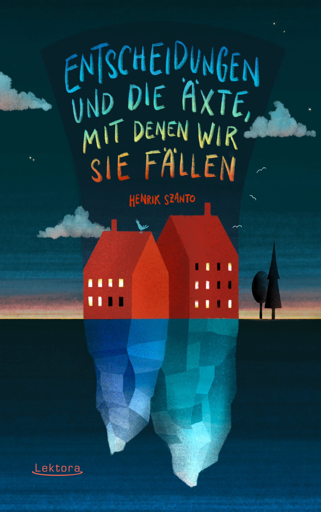

ENTSCHEIDUNGEN UND DIE ÄXTE, MIT DENEN WIR SIE FÄLLEN
Textsammlung

Henrik Szanto erkundet warum es riskant ist, Bären beim Namen zu nennen. Und warum Steppenadler im Rahmen ornithologischer Untersuchungen Roaminggebühren verursachen. Oder unter welchen Umständen Steine Romane verfassen.
Zwischen Sehnsucht und Schalk, zwölf Texte zu Finnland, Ungarn, Mehrsprachigkeit, Herkunft und dem, was daraus erwächst. Verfasst in Prosa und Spoken Word.
Illustriert von Anna Kohlweis, inklusive aller Texte zum Anhören.
G'SCHEIT GOSCHERT
Die österreichische U20 Poetry Slam Anthologie (Herausgeber)
Die U20-Szene des österreichischen Poetry Slams ist absolut divers, eigensinnig und engagiert. Nach dem Motto „Sche*ß da nix, dann föhlt da nix!” rocken Nachwuchspoet*innen die Bühnen der Berge- und Seenation von Österreich und Südtirol (und darüber hinaus)! Alles, was sie dafür brauchen, sind Text, Performance und ein Mikrofon. Diese junge Szene streckt Fäuste in die Luft, schmiert Honig ums Maul, Balsam auf die Seele und lässt Münder zum Staunen offen, sowie Hirne und Herzen hoffen, dass die Zukunft in guten Händen liegt, solange es dieselben sind, die auch diese Texte schreiben.
Es hat 18 Buchstaben und neun davon sind Ypsilons
Textsammlung
Henrik Szanto lebt im Spannungsfeld der Vielfalt und Mehrsprachigkeit. Zwölf Texte zu Finnland, zu Ungarn – zwischen Lyrik und Prosa, Humor und Sehnsucht. Ob am finischen Seeufer, umgeben von Redewendungen, im Lateinunterricht, beim Abendessen mit dem Vater oder Brustschwimmen, ob in den Mauern eines alten Hauses in Budapest oder inmitten des Torjubels – hier leben Sprache und die Freude daran.
Es glänzt und ist schön
Roman
Ben und sein Leben befinden sich im Sorgerechtsstreit ums innere Kind. Einst war er fantasievoll, teilte seine Welt mit imaginären
Banden, Gefährten und Begleitern. Nun ist er erwachsen, soll sich einen lukrativen Job suchen, und nur einer ist ihm geblieben: das
Einhorn.
Das Einhorn ist albern, ganz und gar nicht subtil und spricht in Fußnoten, die Bens Alltag schmücken: seine Arbeit im Kindergarten,
irgendein Studium. Ein Freund überredet Ben dazu, an einem dreistufigen Wettbewerb teilzunehmen, an dessen Ende ein Traumpraktikum
in einem Traumunternehmen mit einem Traumgehalt stehen soll. Ben, von so viel Eindringlichkeit überzeugt, willigt ein und erlebt,
wie absurd, tief, flach und komisch die Welt der Assessment Center, Challenges, Pitches, Anglizismen und Karriereplanung sein kann.
In einer solchen Welt ist ein Einhorn keine Hilfe. Aber es glänzt und ist schön.